流水线¶
- 特点
- 流水线将一个处理过程划分为多个子过程，每个子过程由专门的功能单元来实现
- 流水线中各个阶段的处理时间应尽可能相等，否则会导致流水线阻塞甚至中断；其中耗时最长的阶段会成为整个流水线的瓶颈
- 流水线的每个功能部件都必须配备一个缓冲寄存器（锁存器），这种寄存器被称为流水线寄存器 （传递相邻两个阶段之间的数据，确保后续阶段能正确使用这些数据，同时将各阶段的处理操作相互隔离）
- 分类
- 单功能流水线：只能用来执行一种指令
-
多功能流水线：可以执行多种指令
- 静态流水线：在同一个时间槽内，只能执行相同种类的指令
- 动态流水线：在同一个时间槽内，可以执行不同种类的指令
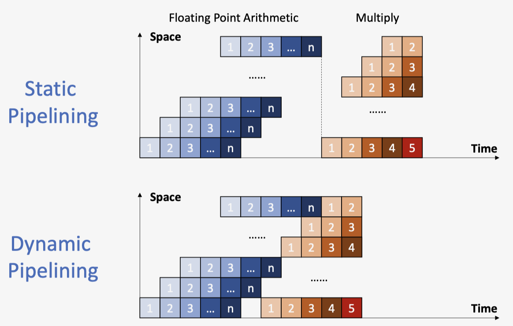
指令执行阶段¶
- IF：内存取指
- ID：译码 & 读取寄存器
- EX：执行指令 or 计算地址
- MEM：访问内存
- WB：写回寄存器
流水线性能¶
-
吞吐量 TP：每秒钟处理的指令数
\[ TP = \frac{n}{T} = \frac{n}{m\Delta t_0 + (n-1)\Delta t_0} \]其中 \(m\) 为流水线阶段个数
吞吐量存在最大值 \(TP < TP_{max}\) ：当 \(n >> m\) 时，\(TP ≈ TP_{max} = \frac{1}{\Delta t_0}\)
-
加速比 Sp：
\[ \begin{aligned} Sp &= \frac{非流水线执行时间}{流水线执行时间} \\ &= \frac{n \times m \times \Delta t_0}{(m+n-1)\Delta t_0} \\ &= \frac{n \times m}{m+n-1} \\ &> 1 \end{aligned} \]当 \(n >> m\) 时，\(Sp ≈ m\)
理想状况
最理想的加速比等于流水线的阶段数，但是并不是阶段数越多越好
-
效率 \(\eta\)：
\[ \begin{aligned} \eta &= \frac{n \times m \times \Delta t_0}{(m+n-1)\Delta t_0 \times m} \\ &= \frac{n}{m+n-1} \end{aligned} \]当 \(n >> m\) 时，\(\eta ≈ 1\)
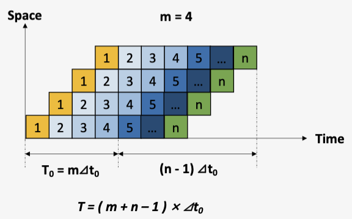
RISC-V 流水线设计¶
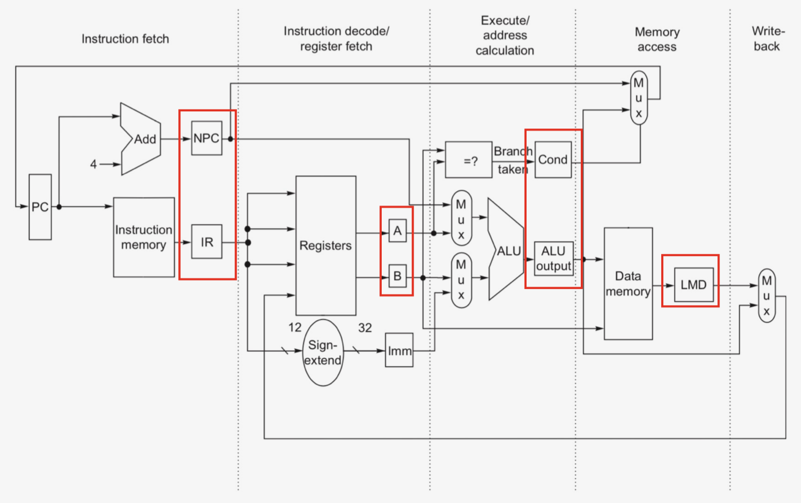
寄存器设计¶
- IF 取指：
- IF/ID.IR：指令寄存器，保存当前指令
- IF/ID.NPC：保存下一条指令地址
- ID 译码：
- ID/EX.A/B：保存寄存器操作数
- ID/EX.Imm：保存生成的立即数
- ID/EX.NPC：传递下一条指令地址（来自IF/ID.NPC）
- ID/EX.IR：传递指令（来自ID/ID.IR）
- EX 执行：
- EX/MEM.IR：传递指令（来自ID/EX.IR）
- EX/MEM.B：传递寄存器操作数
- EX/MEM.ALUOutput：保存计算结果
- EX/MEM.cond：保存比较结果（1/0）
- MEM 读写：
- MEM/WB.IR：传递指令（来自EX/MEM.IR）
- MEM/WB.ALUOutput：传递计算结果
- MEM/WB.LMD：保存读出的Memory数据
- WB 写回
数据通路¶
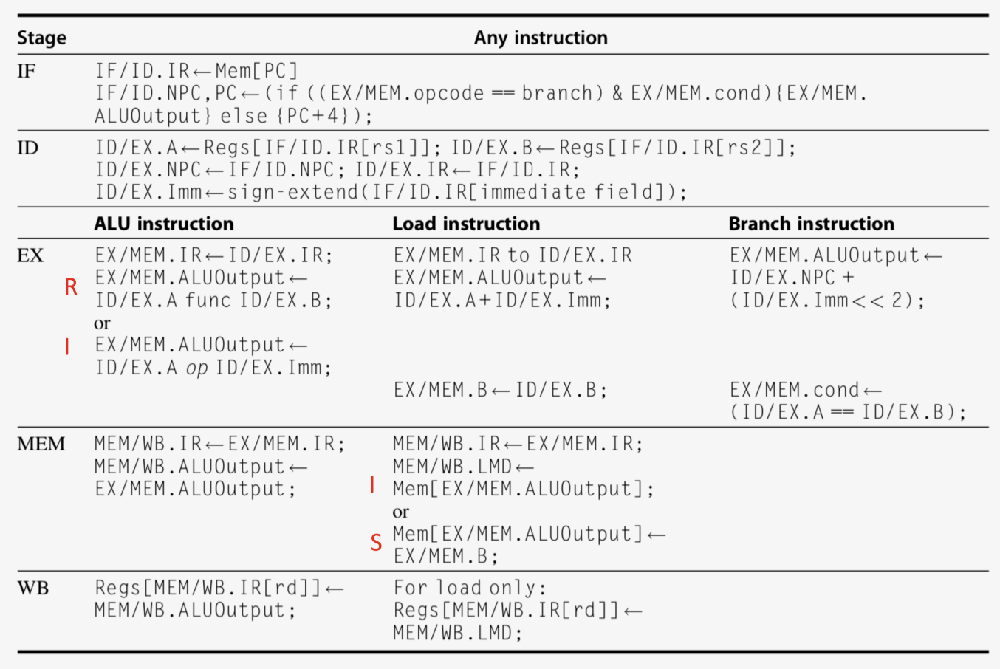
控制信号¶
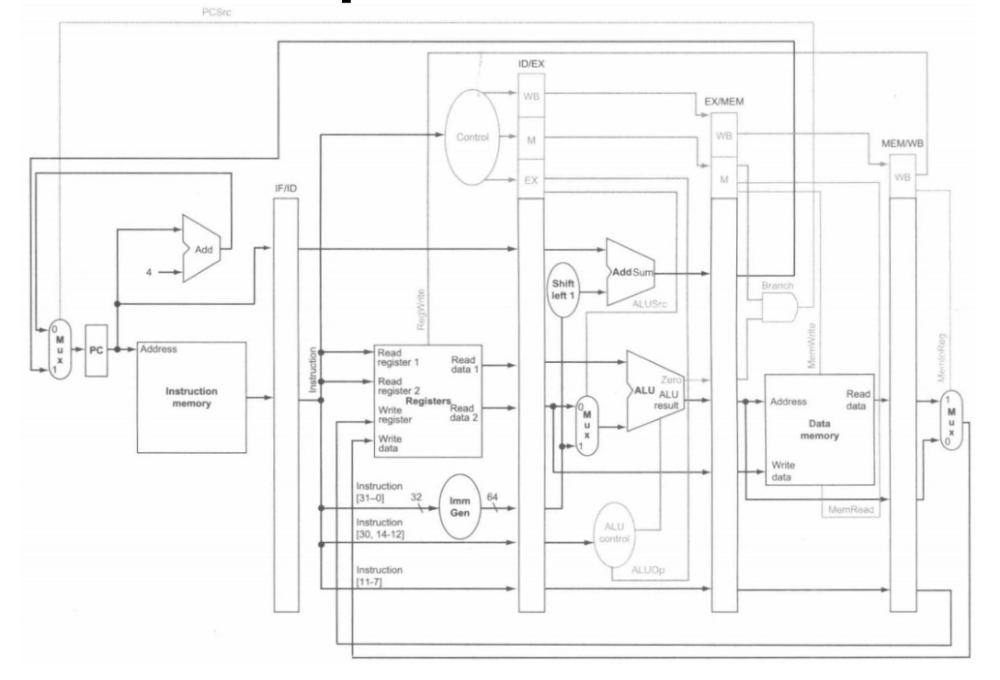
流水线冲突¶
结构冲突¶
-
定义：当前指令需要访问的资源被占用
-
解决方法：
- 增加硬件资源：e.g. 采用独立的指令缓存和数据缓存
stall暂停一些指令：改成 NOPaddi x0, x0, 0指令
数据冲突¶
-
定义：指令间存在数据依赖关系，需要等待上一条指令完成数据的读写
e.g.
add x1, x2, x3指令需要等待x2寄存器写入完成，才能开始执行 -
解决方法：
stall暂停一些指令，直至上一条指令完成数据读写forwarding数据前递：添加额外硬件，直接从内部资源提前获取缺失的数据，避免流水线停顿- 重排代码，避免流水线停顿
Forwarding
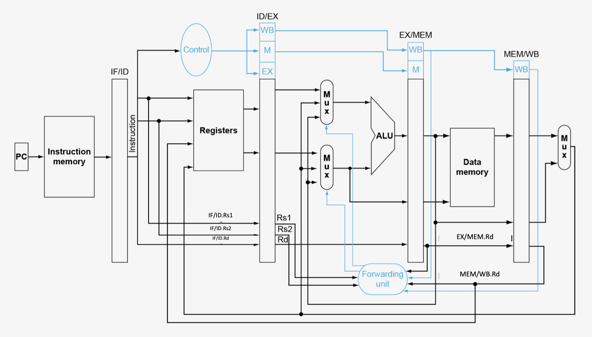
- Load：MEM Hazard
ID/EX.rs1 == MEM/WB.rd||ID/EX.rs2 == MEM/WB.rd:ForwardA/B = 01MEM/WB.rd != 0&MEM/WB.RegWrite == 1
- R-type：EX Hazard
ID/EX.rs1 == EX/MEM.rd||ID/EX.rs2 == EX/MEM.rd:ForwardA/B = 10EX/MEM.rd != 0&EX/MEM.RegWrite == 1
Tip
rs1 和 rs2 需要沿着流水线向下传递，才能用 ID/EX 阶段的rs1 和 rs2 与 MEM/WB 阶段的rd 进行比较。
-
控制信号：
ForwardA：表示rs1的数据来源ForwardB：表示rs2的数据来源
控制信号取值 数据来源 解释 ForwardA/B = 00 ID/EX No forwarding ForwardA/B = 10 EX/MEM Forwarding with data hazard in EX/MEM ForwardA/B = 01 MEM/WB Forwarding with data hazard in MEM/WB
- 双重数据冲突
-
e.g.
-
优先选择
EX的forwarding：在MEM的Forwatding控制信号的生成需要满足不符合EX的forwarding条件
load-use数据冲突
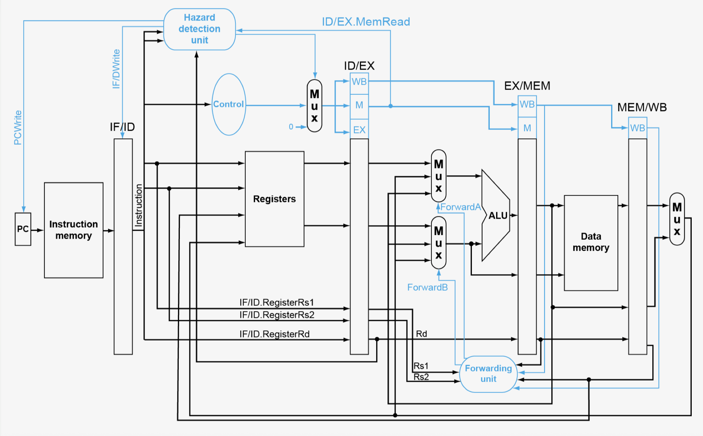
- 产生情况：发生在
load指令后立即使用该数据的指令之间 - 问题：无法通过单一前递解决，需要暂停并且插入气泡
- 添加硬件：冲突侦查单元
- 条件：
ID/EX.MemRead && ((ID/EX. Rd = IF/ID. Rs1) || (ID/EX. Rd = IF/ID. Rs2)) - 解决方法
- 插入
nop指令：ID/EX置0；EX,MEMandWBdonop - 阻止
PC和IF/ID更新
- 插入
Notices
forwarding不能避免所有的流水线停顿，例如上一条指令为load指令
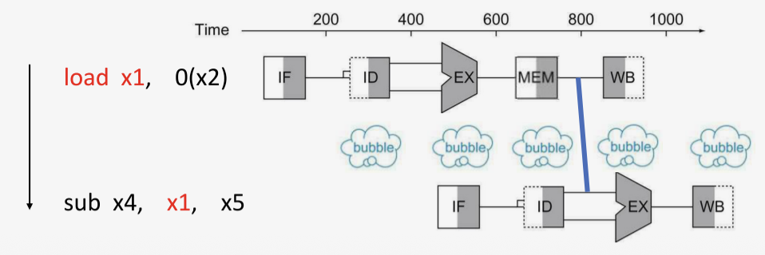
stall会降低性能；编译器可以组织代码来避免冲突和停顿stall之后，可能又会产生数据冲突
控制冲突¶
-
定义：执行流的控制依赖于上一条指令的执行结果
e.g. 条件分支指令（下一条指令不能立即执行）
-
解决方法：
stall：性能不佳，等到MEM阶段才知道分支结果，会导致3个时钟周期的停顿-
Forwarding：在流水线早期，比较寄存器并且计算目标地址，减少停顿- 在
ID阶段添加硬件：目标地址加法器，比较器 - 但是仍需要暂停一个时钟周期
- 如果前移到
IF阶段，则需要更复杂的控制信号
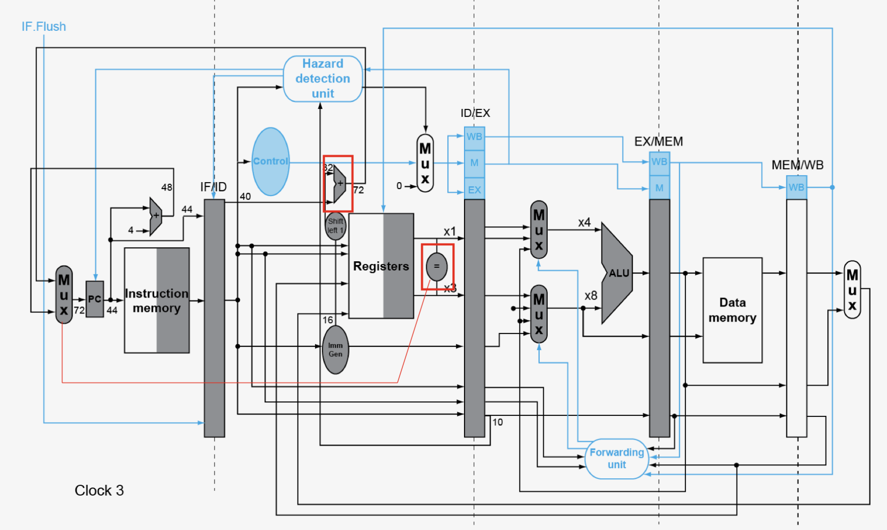
- 在
-
Delay slot：
- 在分支指令后设置一个位置，其中的指令总是会被执行，无论分支是否跳转，从而减少停顿
- 编译器找到一条有用的、与分支指令不相关的指令，并将其移动到延迟槽中；找不到则填入nop
注意！
RISC-V中不存在延迟槽（编译器负担重，指令集复杂）
-
预测：只有预测不正确时，才需要暂停
- 预测
- 静态预测：总是预测不跳转，或总是预测跳转
-
动态预测：根据当前指令的跳转历史进行预测
- 分支历史表（BHT）：
- 按分支指令地址（PC）索引
- 存储当前指令上之前一次或多次的跳转结果，作为预测时的依据
-
1-bit 预测器
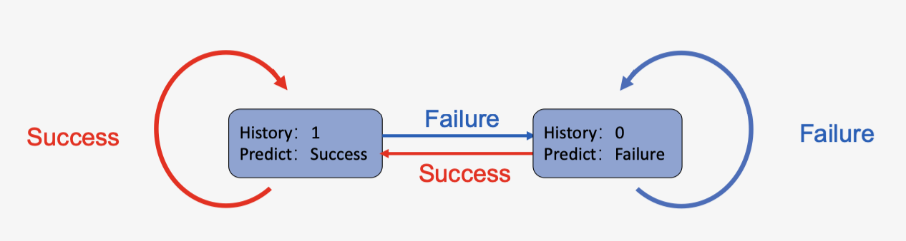
不足
对循环末尾不友好：一个循环分支在结束时会导致连续两次的预测错误
- 在最后一次循环的时候会预测错误（上一次跳转结果为真，但实际跳转结果为假）
- 在下一次进入循环的第一次迭代时，会预测错误（上一次跳转结果为假，但实际跳转结果为真）
-
2-bit 预测器：
- 需要两次连续的误预测才会改变预测方向
- 优势：容忍一次异常行为
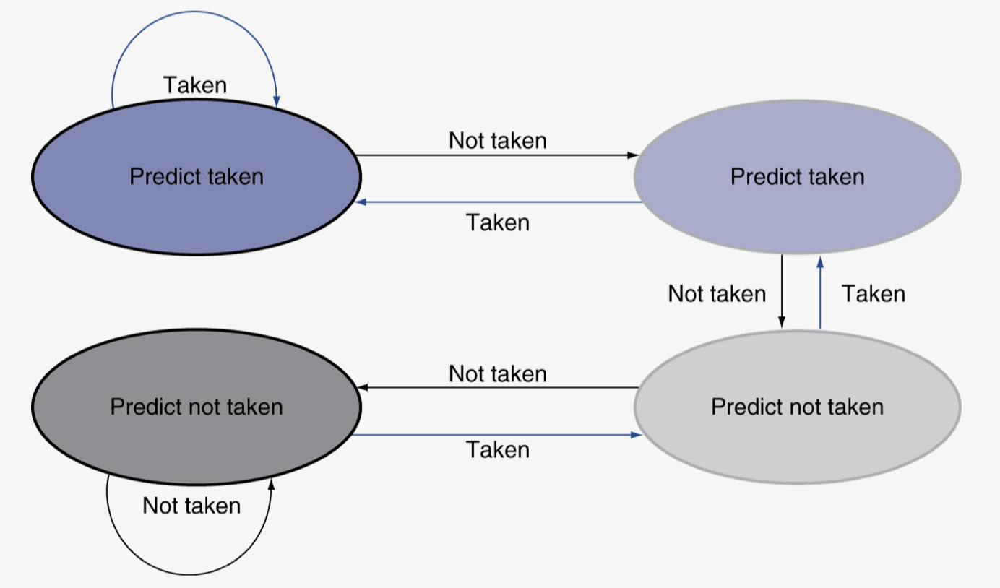
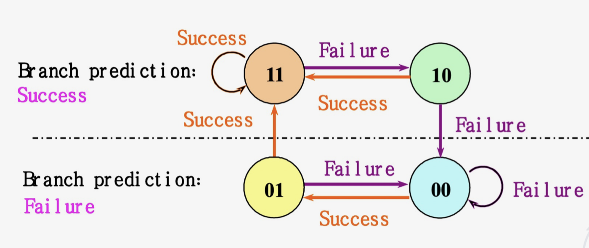
- 分支历史表（BHT）：
-
高级分支预测技术
- 分支目标缓冲（BTB）：一个缓存，索引是PC，内容是预测的目标地址
- 集成取指单元
- 跳转指令的数据冲突
- 若分支依赖的寄存器是之前指令的结果，则仍存在数据冲突，需要停顿+数据前递
- 情况
- 比较寄存器需要紧接着前一条
ALU指令的结果：停顿1周期 - 比较寄存器是紧接着前一条
LOAD指令的结果：停顿2周期
- 比较寄存器需要紧接着前一条
非线性流水线¶
调度¶
-
作用：决定下一条指令进入流水线的时间
-
预约表：用于描述一个任务在流水线中各段占用情况的表格
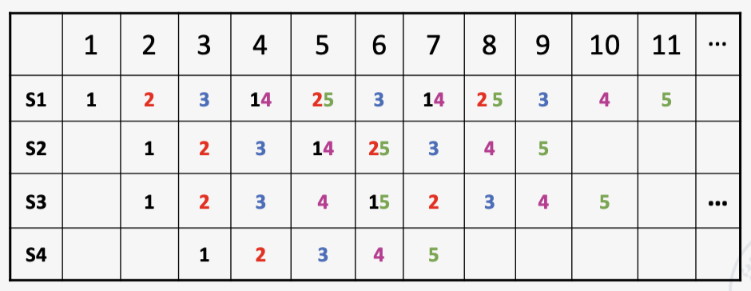
- 调度方法流程：初始冲突向量 → 冲突向量 → 状态转移图 → 循环队列 → 计算最小平均间隔
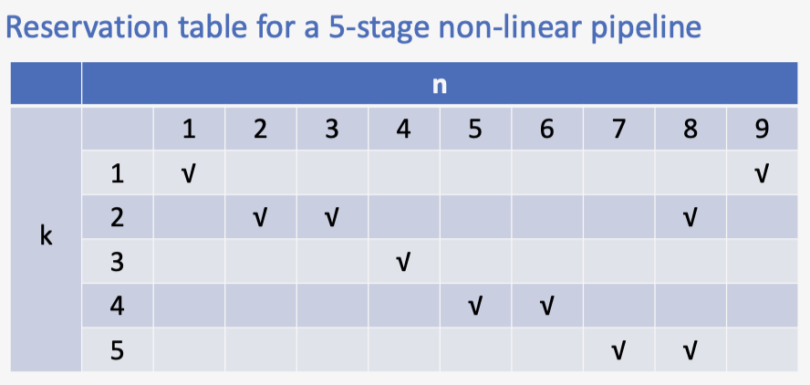
- 初始冲突向量
- 禁止集：元素为两条指令产生冲突相隔的时钟周期
F={1,5,6,8} - 初始冲突向量：禁止集转化，从右到左排列
C_0=(10110001)
- 禁止集：元素为两条指令产生冲突相隔的时钟周期
-
冲突向量
- 不断更新当前指令的冲突向量
-
更新方法：
- 选择间隔的时钟周期（未放入当前指令之前CCV为0的位置），记为
n - 将已经在流水线中的指令的冲突向量向右移
n位 - 所有指令的冲突向量按位或，得到新的CCV
- 重复上述操作直至CCV形成循环，则找到一个调度方案（不止一个）
{2,2,7}
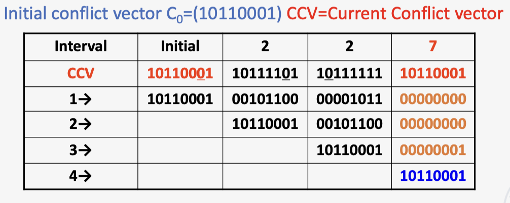
- 选择间隔的时钟周期（未放入当前指令之前CCV为0的位置），记为
-
状态转移图
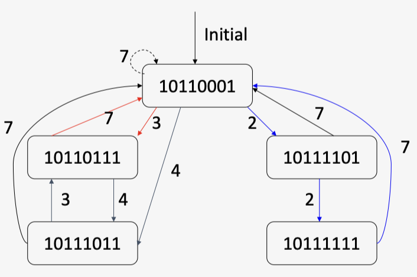
-
寻找最优调度方案：求解最小平均间隔（直接对调度方案求平均）
异常与中断¶
- 定义：需要改变控制流的"意外"事件（不同的ISA对这些术语的使用有所不同）
- 异常：来自CPU内部 e.g. 未定义操作码、系统调用等
- 中断：来自外部I/O控制器
- 在不牺牲性能的情况下处理它们十分困难
- 异常处理
- 保存出错/被中断指令的PC：在
RISC-V中为监督模式异常程序计数器（SEPC） - 保存问题出现的原因：在
RISC-V中为监督模式异常原因寄存器（SCAUSE） - 跳转到处理程序
- 处理程序的操作
- 读取原因（SCAUSE），并跳转到相关的处理程序
- 确定需要采取的操作
- 如果可重新启动：采取纠正措施，使用SEPC返回到程序
- 否则：终止程序，使用SEPC、SCAUSE等报告错误
- 流水线中的异常：控制冒险的另一种形式
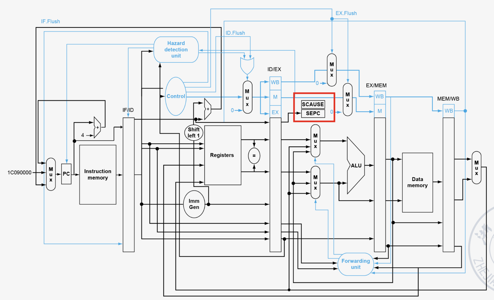
- 多重异常
- 情况：流水线重叠执行多条指令
- 简单方法：处理最早指令的异常，清空后续指令，“精确”异常
- 在复杂流水线中，每周期发射多条指令，且乱序完成，维护较困难
软硬接口¶
CPU软硬件协同¶
- 数据冲突：软件
code scheduling；硬件forwarding - 控制冲突：软件
code scheduling；硬件prediction
程序执行全流程¶
翻译过程（编译与汇编）¶
- 目标：将人类可读的高级语言（C）转换为机器可执行的二进制指令
- 编译：编译器将C代码整体分析和翻译成等效的汇编语言程序
- 汇编：汇编器将每条汇编指令一对一或一对多地转换为二进制机器语言
生成目标模块¶
-
目标：生成一个包含机器代码和元数据的、可重用的代码单元
-
目标模块的组成：
- 头部：描述文件的基本信息和各段的大小与位置
- 代码段：存放编译生成的机器指令
- 静态数据段：存放全局变量等生命周期长的数据
- 重定位信息：标记那些在链接前地址未知的指令和数据（例如，调用外部函数的指令地址）
- 符号表：记录本模块定义的可被其他模块使用的符号（如全局函数、变量），以及本模块引用但未定义的符号（如
printf） - 调试信息：将机器指令与源代码行号对应，便于调试器使用
链接¶
- 目标：将多个目标模块和库文件合并，创建一个完整、独立的可执行文件
- 链接器的核心工作：
- 合并段：将所有输入模块的代码段合并到输出文件的代码段，数据段合并到数据段
- 符号解析与地址分配：遍历所有符号表，为每个符号（函数名、变量名）分配一个最终的运行时内存地址
- 重定位：根据符号的最终地址，修改所有目标模块中那些临时地址或未定地址的引用（这些需要修改的位置由“重定位信息”指出）
- 链接类型：
- 静态链接：在程序运行前，将所有需要的库代码复制到最终的可执行文件中
- 静态链接的
ELF没有.interp节
- 静态链接的
- 动态链接：
- 在可执行文件中只记录它需要哪些共享库
- 在程序加载时或运行时，再由操作系统的动态链接器将所需的库代码加载到内存并完成地址解析
- 动态链接的
ELF有.interp节：指定动态加载器的路径
优缺点
- 静态链接
- 优点：程序独立性强，分发简单；可移植性较好，对环境的依赖小
- 缺点：可执行文件体积大，库更新需要重新链接所有程序
- 动态链接
- 优点：显著减小可执行文件体积；节省内存（多个程序可共享同一份库代码）；库更新无需重新链接程序
- 缺点：增加了程序启动的轻微开销；存在
DLL Hell依赖风险；可移植性较差
加载¶
-
目标：将磁盘上的可执行文件加载到内存中，并创建一个可以运行的进程。
-
加载器的步骤
- 读取头部：了解代码和数据段的大小及位置
- 创建地址空间：为程序创建一个独立的虚拟地址空间
- 载入代码与数据：将代码段和已初始化的数据段从文件复制到内存的相应位置（现代OS常使用按需分页，仅建立映射关系，在实际访问时才调入内存）
- 设置栈：为程序分配栈空间，并将命令行参数(
argc,argv)和环境变量压栈 - 初始化寄存器：将栈指针寄存器(
sp, 即x2)等设置为初始值 - 跳转到入口点：跳转到启动例程（如
_start），该例程负责初始化C运行时环境，最后调用程序的main函数；当main返回时，再通过exit系统调用结束进程
执行¶
- 核心：CPU 的工作周期
- 取指：程序计数器(
PC)指向下一条指令的地址，CPU从内存中读取该指令 - 译码：控制单元解析指令，识别操作类型和操作数
- 执行：算术逻辑单元(
ALU)根据指令执行计算，访问寄存器文件或内存 - 回写：将结果写回寄存器或内存
- 更新PC：将PC设置为下一条指令的地址，周而复始
- 软件-硬件接口的体现：指令集架构 是这个循环的规则书，软件（编译后的指令序列）通过它来指挥硬件